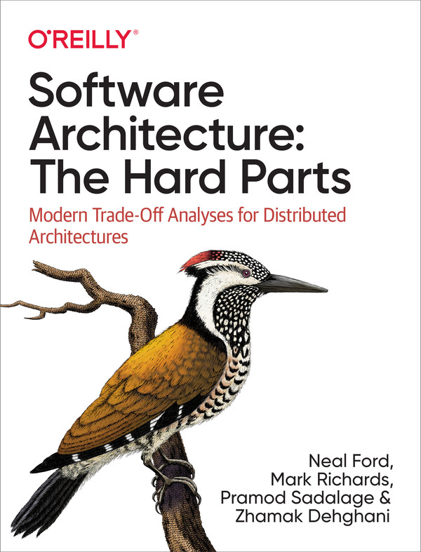

英文原版封面 · O’Reilly
BOOK 003 / 分布式架构与权衡分析
Software Architecture:
The Hard Parts
Modern Trade-Off Analysis for Distributed Architectures
把单体拆成服务之后，数据、事务、发布与工作流会怎样变化？本书从耦合入手，先把纠缠的问题分开分析，再研究各部分如何协作。贯穿全书的 Sysops Squad 虚构案例，让每个决定都有业务背景、候选方案与需要承担的后果。
适合已有开发经验、准备参与单体改造或分布式系统设计的读者。了解组件、数据库事务和服务调用有助于阅读。笔记着重解释“为什么这样选”，并将作者论述、补充解释和技术核查分清。
以用户提供的英文原书 PDF 为依据，扉页、版权及目录已核对；中文标题与术语为本站译法。副标题依扉页使用 Analysis。具体正文范围见各章来源，原书资料仅本地留存。资料准备日期：2026-11-06。
阅读目录
15 个主体章节第 1 章建立共同背景；第一部分拆解结构与数据，第二部分分析重新协作后的取舍。全书整合已完成；可按五条专题路径回读，或查阅13 项案例 ADR、纠错与边界及附录与资料缺口。
01没有“最佳实践”时怎样决策What Happens When There Are No “Best Practices”?已收录 · 10 节 · 3 幅图第一部分 · 拆开系统
Part I · Pulling Things Apart
02辨析软件架构中的耦合Discerning Coupling in Software Architecture已收录 · 9 节 · 2 幅图 03架构模块化Architectural Modularity已收录 · 10 节 · 2 幅图 04架构分解Architectural Decomposition已收录 · 9 节 · 3 幅图 05基于组件的分解模式Component-Based Decomposition Patterns已收录 · 13 节 · 3 幅图 06拆分运营数据Pulling Apart Operational Data已收录 · 18 节 · 3 幅图 07服务粒度Service Granularity已收录 · 11 节 · 3 幅图第二部分 · 重新组合
Part II · Putting Things Back Together
08复用模式Reuse Patterns已收录 · 11 节 · 3 幅图 09数据所有权与分布式事务Data Ownership and Distributed Transactions已收录 · 15 节 · 3 幅图 10分布式数据访问Distributed Data Access已收录 · 11 节 · 3 幅图 11管理分布式工作流Managing Distributed Workflows已收录 · 13 节 · 3 幅图 12事务 SagaTransactional Sagas已收录 · 17 节 · 4 幅图 13契约Contracts已收录 · 13 节 · 4 幅图 14管理分析数据Managing Analytical Data已收录 · 14 节 · 4 幅图 15构建自己的权衡分析Build Your Own Trade-Off Analysis已收录 · 14 节 · 3 幅图